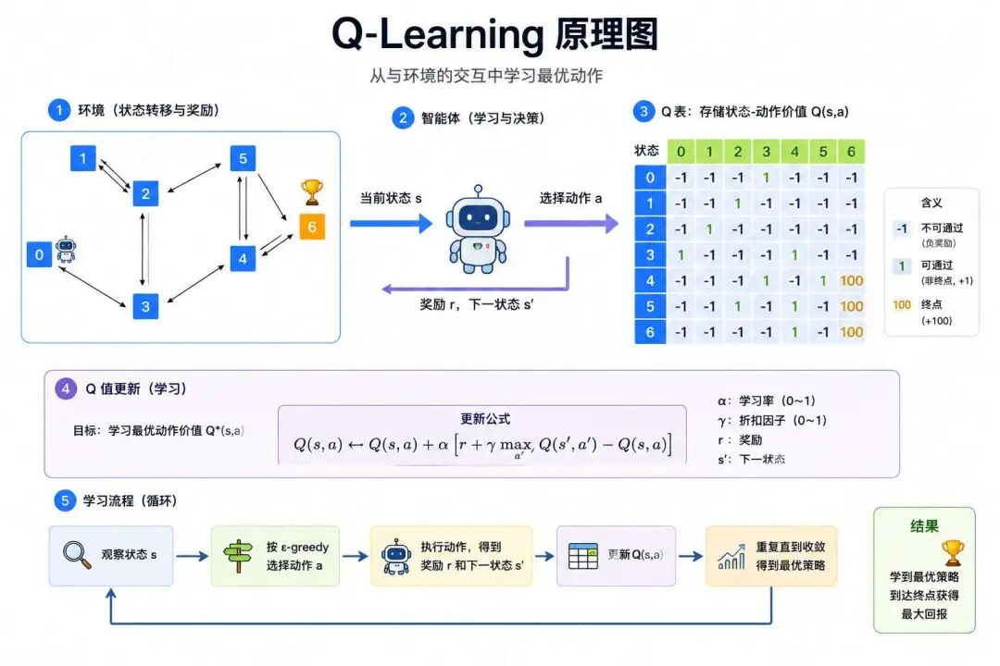
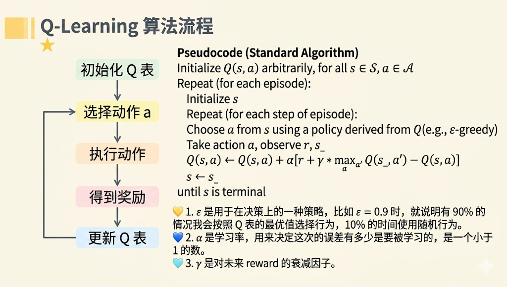

数学之所以有高声誉，另一个理由就是数学使得自然科学实现定理化，给予自然科学某种程度的可靠性。--爱因斯坦
SARSA算法的提出，确立了强化学习的一种新范式。即通过"同策略(on-policy)"的学习方式，解决了在无模型环境中探索与利用的平衡问题。尤其在高风险的任务中，展现出了天然的保守性与安全性优势，如机器人避障和金融交易场景。
但也正是因为其保守性的学习方法，导致SARSA会因探索中的负奖励而避开最优路径，选择更安全的次优路径。
其次是其"同策略"导致了旧数据因策略更新而失效，需持续采样新数据，也无法使用历史经验数据，这就导致了其样本利用率低。
为了解决以上SARSA算法的局限性，Q-Learning通过异策略(off-policy)的架构视角，对SARSA算法的缺陷提供了新解决思路。
Q-Learning的理论基础同样源于贝尔曼方程：将长期奖励分解为即时奖励+未来奖励折现（Q(s,a) = E[r + γ·max Q(s',a')]）。
其次，它还有第二个理论来源，基于时序差分（TD）算法，通过相邻状态价值差异动态来更新Q值，而无需等待任务结束。

因此Q-learning的核心思想是通过最大化未来估计和离线策略的更新来实现对最优策略的直接逼近，即通过贝尔曼最优方程和TD迭代逼近最优Q值的公式：
$$ Q(s,a) \leftarrow Q(s,a) + \alpha \cdot \left[r + \gamma \cdot \max_{a'} Q(s',a') - Q(s,a)\right] $$注释版：
$$ \underbrace{Q(s,a)}_{\text{更新后动作价值}} \leftarrow \underbrace{Q(s,a)}_{\text{原始动作价值}} + \underbrace{\alpha}_{\text{学习率}} \cdot \left[ \underbrace{r}_{\text{即时奖励}} + \underbrace{\gamma}_{\text{折扣因子}} \cdot \underbrace{\max_{a'} Q(s',a')}_{\text{下一状态最大Q值}} - \underbrace{Q(s,a)}_{\text{原始动作价值}} \right] $$价值的更新采用时序差分方法，其中：
针对这个更新公式我们逐步分析每一部分，重点分析+号后面部分的内容，它是TD误差：
$$ \Delta Q = \alpha \left[ \underbrace{R_{t+1}}_{\text{即时奖励}} + \underbrace{\gamma \max_{a'} Q(S_{t+1}, a')}_{\text{未来最优估计}} - \underbrace{Q(S_t, A_t)}_{\text{当前估计}} \right] $$其中 $R_{t+1}+\gamma \max_{a'} Q(S_{t+1},a')$ 称为Q-learning目标（TD目标），由即时奖励和未来最优估计构成：
1）即时奖励 $R_{t+1}$ ：
即时奖励是环境对动作 $A_t$ 的直接反馈，体现动作的短期收益。
例如：在网格世界中移动获得-1的步数惩罚）或+10的目标奖励。
2）未来最优估计 $\gamma \max_{a'} Q(S_{t+1}, a')$
由折扣因子和下一状态最优动作估值组成，折扣因子 γ（0≤γ<1），平衡了当前与未来奖励的权重。γ->0时智能体短视，只看当下；γ->1时重视长期规划，关注未来累积回报。
最大化操作 $\max_{a'}$ 是关键创新点，直接假设下一状态 $S_{t+1}$ 采取最优动作，而非实际执行的动作，这是与SARSA算法的最大不同之处，这使得Q-learning能直接学习最优策略，不受探索策略干扰。
因此 $\max_{a'} Q(S_{t+1},a')$ 为下一状态的最优动作估值，体现离线策略（Off-Policy）特性，使得更新目标（贪婪策略，最大Q值）与行为策略（如ε-贪婪）实现了分离。
3）TD误差与价值更新
$\delta = R_{t+1}+\gamma \max_{a'} Q(S_{t+1},a') - Q(S_t,A_t)$ 称为TD误差（TD Error），则价值更新公式为：
$$ \underbrace{Q(s,a)}_{\text{更新后动作价值}} \leftarrow \underbrace{Q(s,a)}_{\text{原始动作价值}} + \alpha \cdot \delta $$学习率 α（0<α≤1）可控制更新幅度。过高（如α>0.5）导致震荡；过低（如α<0.01）收敛慢。通常初期设0.1，后期衰减至0.01。
4）更新方向：
5）历史数据重用原理：
由于更新仅依赖 ($S_t, A_t, R_{t+1}, S_{t+1}$) 四元组，与动作选择策略无关，因此任何历史经验（无论由何种策略生成）均可用于更新Q值。
早期探索阶段的随机动作数据，在后期仍可用于优化Q表。这一特性也是后续Deep Q-Network (DQN)中"经验回放（Experience Replay）"机制的理论根基--智能体可以将历史交互数据存入缓冲池，反复采样训练，大幅提升样本利用率。
介绍完Q-Learning的核心原理，会不会觉得Q-Learning和SARSA算法特别的像，两者的区别在哪？
最终要的区别在于两者的更新目标的区别，其中：
SARSA：
Q-Learning：
| 算法 | 更新公式 | 核心差异 |
|---|---|---|
| SARSA | $Q(s_t, a_t) \leftarrow Q(s_t, a_t) + \alpha \left[ r_{t+1} + \gamma Q(s_{t+1}, a_{t+1}) - Q(s_t, a_t) \right]$ | 使用 实际执行的下一个动作 $a_{t+1}$ 的 Q 值更新，体现 同策略（On-Policy） 特性：学习与行为策略一致。 |
| Q-Learning | $Q(s_t, a_t) \leftarrow Q(s_t, a_t) + \alpha \left[ r_{t+1} + \gamma \max_{a'} Q(s_{t+1}, a') - Q(s_t, a_t) \right]$ | 使用 下一状态的最优动作估值 $\max_{a'} Q(s_{t+1}, a')$ 更新，体现 异策略（Off-Policy） 特性：学习与行为策略分离。 |
总之，Q-Learning的TD目标使用下一状态的最优动作估值（$\max Q$），无视实际执行的动作；
SARSA的TD目标依赖下一状态实际选择的动作 a'（由ε-greedy生成）。
一个经典的对比场景是"悬崖行走（Cliff Walking）"问题：智能体需要从起点走到终点，路径旁边是悬崖（掉下去有巨大负奖励）。SARSA会因为探索时偶尔掉崖的负反馈，学到一条"绕远路但安全"的策略；而Q-Learning则会直接学到"贴着悬崖走"的最短路径--尽管在实际执行（含ε探索）时仍可能掉崖。这正是两者风险偏好差异的生动体现。
| 特性 | Q-Learning | SARSA |
|---|---|---|
| 策略类型 | 离线策略（Off-Policy） | 在线策略（On-Policy） |
| 更新目标 | 下一状态最优动作（$\max Q$） | 下一状态实际动作（$Q(s',a')$） |
| 风险偏好 | 激进（追求全局最优） | 保守（规避即时风险） |
| 适用场景 | 稳定环境（游戏、路径规划） | 高风险环境（机器人避障） |
| 数据利用 | 可重用历史经验（支持经验回放） | 需实时交互数据 |
需要补充说明的是，Q-Learning中的 $\max$ 操作虽然带来了对最优策略的直接逼近，但也引入了过估计偏差（Overestimation Bias），由于每次都选取最大Q值，估计噪声会被系统性放大，导致Q值整体偏高。这一问题在后续的Double Q-Learning中得到了改进，我们会在后面的文章中专门讨论。
我们继续以小王（前几篇中反复出现的通勤者角色）优化交通工具选择为例，看看Q-Learning的实际应用。
场景设定
Q-Learning 工作流程（小王视角）

1、初始化Q表：注意，这里出现了Q表的概念，它记录了在不同状态（State）下，执行每个可能动作的预期价值（Q值）。
| 状态 (State) | 动作 A 的 Q 值 | 动作 B 的 Q 值 | ... | 动作 N 的 Q 值 |
|---|---|---|---|---|
| 状态 1 (s1) | Q(s1, A) | Q(s1, B) | ... | Q(s1, N) |
| 状态 2 (s2) | Q(s2, A) | Q(s2, B) | ... | Q(s2, N) |
| ... | ... | ... | ... | ... |
| 状态 M (sM) | Q(sM, A) | Q(sM, B) | ... | Q(sM, N) |
2、探索与决策（ε-贪婪策略）：
以晴天早高峰（状态S1）为例：
3、Q值更新（离线策略核心）：
公式：
$$ Q(S1,\text{公交}) \leftarrow Q(S1,\text{公交}) + \alpha \left[ -5 + \gamma \cdot \max_{a'}Q(S2,a') - Q(S1,\text{公交}) \right] $$关键解析：
4、长期效果：
训练后，Q表记录全局最优解：
最终Q表结果：
| 状态（交通情境） | 地铁 | 公交 | 打车 | 骑车 | 最优动作 |
|---|---|---|---|---|---|
| 晴天早高峰（拥堵） | 7.2 | 3.1 | 5.8 | -1.5 | 地铁 🚇 |
| 晴天平峰（畅通） | 6.5 | 6.0 | 4.2 | 8.1 | 骑车 🚴 |
| 雨天早高峰（拥堵） | 5.9 | 2.8 | 8.7 | -2.1 | 打车 🚖 |
| 雨天平峰（畅通） | 4.3 | 5.2 | 7.5 | 6.8 | 打车 🚖 |
1、初始化阶段
2、动作选择（ε-greedy策略）
示例：在迷宫导航中，90%概率走最优路径，10%随机尝试新方向以发现捷径。
3、环境交互与反馈
4、Q值更新（核心步骤）
示例：
- 当前状态s：迷宫位置(1,1)，动作a=向右->新状态s'=(1,2)，奖励r=0（移动）。
- 若s'的最大Q值=8.0，γ=0.9，则目标值=0 + 0.9×8.0=7.2。
- 若原Q(s,a)=5.0，α=0.1，则更新后Q(s,a)=5.0 + 0.1×(7.2-5.0)=5.22。
5、状态转移与回合终止
6、轮次循环与训练收敛
以下为其伪代码实现：
初始化Q表（全0或随机值）
设置参数：α（学习率）、γ（折扣因子）、ε（探索率）
for 每次训练回合（episode）:
初始化状态s
while s 非终止状态:
1. 根据ε-贪婪策略选择动作a
2. 执行a，获得奖励r和新状态s'
3. 更新Q值：Q(s,a) = Q(s,a) + α[r + γ·max_a' Q(s',a') - Q(s,a)]
4. 更新状态：s = s'
逐步衰减ε（如ε = ε * 0.99）
输出最优策略：每个状态选择 max_a Q(s,a) 的动作超参数的设置建议
| 参数 | 作用 | 影响 | 典型值/策略 |
|---|---|---|---|
| 学习率α | 控制Q值更新步长 | 过高导致震荡；过低收敛慢 | 初始0.1~0.5，后期衰减至0.01 |
| 折扣因子γ | 未来奖励权重 | γ->1重视长期回报；γ->0侧重即时奖励 | 长期任务：0.9-0.99；短期任务：0.5-0.8 |
| 探索率ε | 平衡探索与利用 | 过高浪费资源；过低陷入局部最优 | 初始1.0，指数衰减至0.01~0.1 |
Q-Learning通过引入"下一状态最优动作估值"作为更新目标，实现了行为策略与目标策略的分离，从而具备了直接逼近最优策略的能力。这种异策略架构不仅让它能复用历史经验，更为后续深度强化学习奠定了理论基础。
不过，表格型Q-Learning也有其先天局限：当状态空间或动作空间变得庞大，如图像输入、连续控制，Q表将不再可行；同时 $\max$ 操作带来的过估计偏差也会在复杂任务中被放大。
下一篇，我们将走进深度Q网络（DQN），看看Q-Learning是如何与神经网络结合，把"Q表"升级为"Q函数逼近器"，从而征服Atari游戏等复杂场景的。
时序差分（TD, Temporal Difference） 一种无需等待任务结束、即可在相邻时间步之间更新价值估计的方法。它融合了蒙特卡洛的"从经验中学习"与动态规划的"用已有估计去更新估计（自举）"两大思想，仅凭单步转移 $(S_t, A_t, R_{t+1}, S_{t+1})$ 就能完成一次学习，是 Q-Learning 与 SARSA 共同的算法引擎。
异策略 / 离线策略（Off-Policy） 指智能体的"行为策略"（实际与环境交互、产生数据的策略，如 ε-贪婪）与"目标策略"（被优化、最终要学到的策略，如贪婪策略）相互分离的学习范式。这种分离让算法可以一边用带探索噪声的策略去采集数据，一边朝着最优策略的方向更新，是 Q-Learning 区别于 SARSA 的本质特征，也是历史经验得以复用的前提。
TD 目标与 TD 误差（TD Target & TD Error） TD 目标 $R_{t+1} + \gamma \max_{a'} Q(S_{t+1}, a')$ 是对当前动作价值的一个"更优估计"，由即时奖励与未来最优估计两部分构成；TD 误差 $\delta = \text{TD目标} - Q(S_t, A_t)$ 则是这一更优估计与当前估计之间的差值。δ 正负决定修正方向、大小决定修正幅度，是驱动 Q 值不断逼近真实价值的核心信号。
最大化操作与过估计偏差（max Operation & Overestimation Bias） Q-Learning 在构造 TD 目标时，假设下一状态必然采取最优动作（取 $\max_{a'} Q$），而非实际执行的动作。这是它能直接学习最优策略、不受探索干扰的关键创新；但凡事有代价--由于每次都选取最大值，估计中的随机噪声会被系统性放大，导致 Q 值整体偏高，即"过估计偏差"，这也正是后续 Double Q-Learning 试图修正的问题。
Q 表（Q-Table） 一张以"状态 × 动作"为维度的表格，每个单元格记录在某状态下执行某动作的预期长期回报（Q 值）。它是表格型 Q-Learning 存储和查询价值的载体，训练完成后，每个状态下 Q 值最大的动作即构成最优策略。但当状态或动作空间庞大乃至连续时，Q 表将不再可行，这正是引出深度 Q 网络（DQN）的动因。
ε-贪婪策略（ε-greedy Policy） 平衡"探索"与"利用"的经典动作选择机制：以 1−ε 的概率选取当前 Q 值最大的动作（利用已知最优），以 ε 的概率随机尝试其他动作（探索未知）。ε 通常从接近 1 出发、随训练逐步衰减至接近 0，使智能体早期广泛试错、后期专注收敛。
经验回放（Experience Replay） 将智能体与环境交互产生的历史四元组存入缓冲池，训练时反复随机采样以更新价值。它的成立依赖于 Q-Learning 的异策略特性--既然更新与动作生成策略无关，旧数据便不会因策略更新而失效。这一机制大幅提升了样本利用率，是后续 DQN 稳定训练的支柱之一。